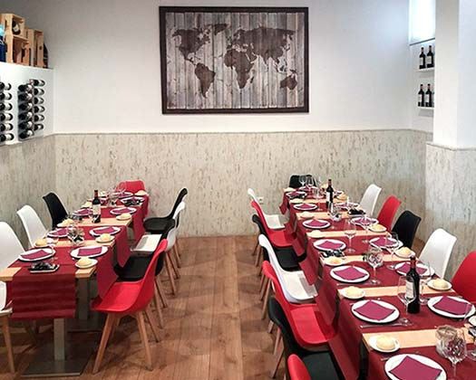

Nuestra carta
Sabores que cuentan una historia
Experiencia 3D
Cinco platos, otra perspectiva
Representaciones digitales ilustrativas. No son escaneos exactos de los platos.
Recorrido virtual
Conoce Las Dunas
antes de llegar
Demo conceptual · fotografía real
Food Guide
¿Qué te apetece hoy?
Busca por ingrediente o deja que te recomendemos un plato de nuestra selección verificada.
Prueba con «pescado» o «carne».
Grupos y eventos
A partir de 8 personas,
servimos platos.
Comidas de empresa, celebraciones y encuentros con amigos. Consulta los menús concertados vigentes y solicita presupuesto.
Reservas
Tu mesa te espera
Lunes descanso · Mar-Vie 08:30-00:00 · Sáb 09:30-00:00 · Dom 09:30-16:30